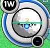

PangYa : Hole in One : How to
How to use :)
สูตรลับน่ะ ไม่มีหรอก มีแต่ตัวเราเอง :3 ขอเพียงนึกว่าเป็นสิ่งที่พิเศษ
ระบบคำนวณนี้ จะใช้ได้กับการตี Tomahawk เท่านั้น
และต้องตั้งสปินในลักษณะดังรูปก่อน เรียกกันว่า "สปินเจ็ด"

จากนั้น กรอกรายละเอียดเข้าไปที่ฟอร์ม ระบบจะคำนวณผลออกมาโดยที่
Green cell : คือ ทิศทางที่ใช้ตี โดยจะบอกการเลื่อนไม้ว่าไปในทิศทางไหน พร้อมกับบอกว่าเลื่อนไปกี่ช่อง green (ตอนนี้เพิ่มหน่วย PB แล้ว เผื่อคนต้องการความแม่นยำยิ่งขึ้น)
Power : คือขนาดแรงที่ใช้ตี
** ทิศทางลม ให้กำหนดแนวตั้งเป็น 0 องศา และ แนวนอนคือ 90 องศา